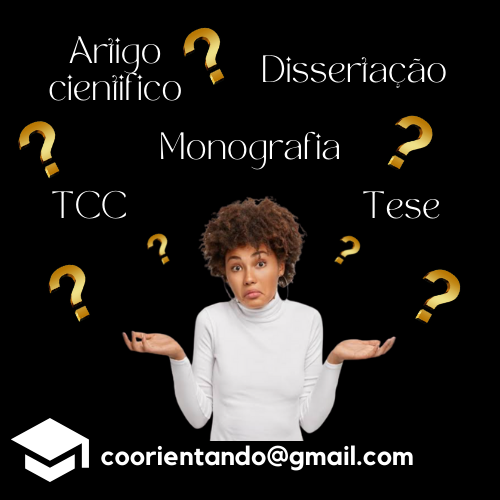
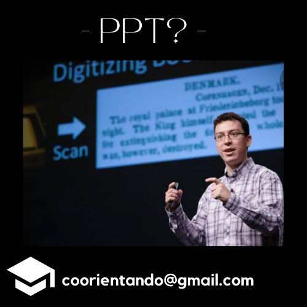

Quem somos
Somos especialistas em correção e formatação de trabalhos acadêmicos e orientação via monitoria desde 2015.
Nossos Serviços
- Correção de Texto (gramática, semântica, construção)
- Formatação de Trabalhos conforme a ABNT e/ou normas específicas
- Elaboração de: Resumo, Tabelas e Graficos, Apresentação em Power Point, Poster para apresentação em Congressos, Lista Automatica de Tabelas, Siglas, Figuras e Sumario.
- Verificação e Formatação de Referências Bibliográficas
Publicações
O que é ABNT?
02/Set/2022, 22h03
.png)
Sigla para Associação Brasileira de Normas Técnicas,é o Foro Único Nacional de Normalização por reconhecimento da sociedade brasileira desde a sua fundação, confirmado pelo Governo Federal por meio de diversos instrumentos legais. A ABNT é membro fundador da International Organization for Standardization (ISO), da Comisión Panamericana de Normas Técnicas (Copant), da Asociación Mercosur de Normalización (AMN) e é também membro da International Electrotechnical Commission (IEC) desde a sua fundação.
A ABNT é responsável pela elaboração das Normas Brasileiras (ABNT NBR), elaboradas por seus Comitês Brasileiros (ABNT/CB), Organismos de Normalização Setorial (ABNT/ONS) e Comissões de Estudo Especiais (ABNT/CEE). Desde 1950, a ABNT atua também na avaliação da conformidade, dispondo de programas para certificação de produtos, sistemas e rotulagem ambiental. Esta atividade está fundamentada em guias e princípios técnicos internacionalmente aceitos e alicerçada em uma estrutura técnica e de auditores multidisciplinares, garantindo credibilidade, ética e reconhecimento dos serviços prestados.
Quer conhecer mais sobre a ABNT e suas normas? Acesse o site da ABNT
Diferentes Trabalhos
05/set/2022, 23h11
São tantos os termos para trabalhos acadêmicos que às vezes nos perguntamos e podemos nos confundir sobre o conceito de cada um. MAS QUAL É MESMO A DIFERENÇA ENTRE ELES? De maneira bem resumida, seria:
TCC – Trabalho de Conclusão de Curso: Trabalho acadêmico realizado como pré-requisito para finalização de cursos. Podem ser: Monografia, Artigo Cientifico, Relatório Cientifico, Dissertação, Tese, entre outros que podem variar de acordo com o curso e a instituição.
Artigo Científico: Segundo a ABNT (NBR 6022), o artigo científico pode ser definido como a “publicação com autoria declarada, que apresenta e discute ideias, métodos, técnicas, processos e resultados nas diversas áreas do conhecimento”. Geralmente eles acabam por serem um resumo de trabalhos maiores como os a seguir.
Monografia: Trata-se de trabalho científico utilizado para debater, analisar, averiguar uma temática específica de forma aprofundada. É uma modalidade de pesquisa no qual constam o tema, os objetivos, situação problema, fundamentação teórica, análise, resultados e considerações da temática abordada. (Fonte: Educa Mais Brasil)
Dissertação: Trabalho final apresentado para conclusão de Mestrado.
Tese: Trabalho final apresentado para conclusão de Doutorado.
Cada tipo de trabalho tem características especificas, conforme a ABNT, como regras de formatação, tamanho (mínimo e máximo de páginas), apresentação do conteúdo (estrutura), etc.
Apresentação em PPT
06/set/2022
PowerPoint é um programa da Microsoft utilizado para a criação/edição e exibição de apresentações gráficas. Um dos mais utilizados para esta finalidade, tem como grande serventia para as apresentações de trabalhos, sejam eles no cotidiano das aulas ou em apresentações de trabalhos acadêmicos e científicos, projetos, entre outros.
“O PowerPoint foi criado por Robert Gaskins e Dennis Austin em uma empresa de software chamada Forethought, Inc. Lançado em 20 de abril de 1987, inicialmente ele rodava apenas em computadores da Apple. Três meses mais tarde, a Microsoft adquiriu os direitos do programa. ” (Fonte: Smartalk)
Um apoio visual pode fazer com que sua apresentação torne o tema mais atrativo. Mais que isso: já é provado que apresentações que têm slides para ilustrar a fala são mais eficazes para fixar as mensagens na cabeça do público.
Os arquivos do PowerPoint em geral são lidos sem problemas por outros softwares similares como o Impress (software multiplataforma - Windows, Linux, Mac OS X, Solaris).
Contato
Envie sua Mensagem para nossa Equipe e breve responderemos!
E-mail: coorientando@gmail.com